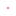

<!doctype html>
<html lang="en">
    <head>
        <meta charset="utf-8">
        <meta http-equiv="X-UA-Compatible" content="IE=edge">
        <meta name="viewport" content="initial-scale=1,user-scalable=no,maximum-scale=1,width=device-width">
        <meta name="mobile-web-app-capable" content="yes">
        <meta name="apple-mobile-web-app-capable" content="yes">
        <link rel="stylesheet" href="css/leaflet.css">
        <link rel="stylesheet" href="css/qgis2web.css"><link rel="stylesheet" href="css/fontawesome-all.min.css">
        <style>
        html, body, #map {
            width: 100%;
            height: 100%;
            padding: 0;
            margin: 0;
        }
        </style>
        <title></title>
    </head>
    <body>
        <div id="map">
        </div>
        <script src="js/qgis2web_expressions.js"></script>
        <script src="js/leaflet.js"></script>
        <script src="js/leaflet.rotatedMarker.js"></script>
        <script src="js/leaflet.pattern.js"></script>
        <script src="js/leaflet-hash.js"></script>
        <script src="js/Autolinker.min.js"></script>
        <script src="js/rbush.min.js"></script>
        <script src="js/labelgun.min.js"></script>
        <script src="js/labels.js"></script>
        <script src="data/points_5.js"></script>
        <script>
        var highlightLayer;
        function highlightFeature(e) {
            highlightLayer = e.target;

            if (e.target.feature.geometry.type === 'LineString') {
              highlightLayer.setStyle({
                color: '#ffff00',
              });
            } else {
              highlightLayer.setStyle({
                fillColor: '#ffff00',
                fillOpacity: 1
              });
            }
        }
        var map = L.map('map', {
            zoomControl:true, maxZoom:20, minZoom:1
        }).fitBounds([[59.86228922152731,29.936701016457064],[60.02939880050977,30.689871734063004]]);
        var hash = new L.Hash(map);
        map.attributionControl.setPrefix('<a href="https://github.com/tomchadwin/qgis2web" target="_blank">qgis2web</a> &middot; <a href="https://leafletjs.com" title="A JS library for interactive maps">Leaflet</a> &middot; <a href="https://qgis.org">QGIS</a>');
        var autolinker = new Autolinker({truncate: {length: 30, location: 'smart'}});
        var bounds_group = new L.featureGroup([]);
        function setBounds() {
        }
        map.createPane('pane_DarkMatter_0');
        map.getPane('pane_DarkMatter_0').style.zIndex = 400;
        var layer_DarkMatter_0 = L.tileLayer('http://a.basemaps.cartocdn.com/dark_all/{z}/{x}/{y}.png', {
            pane: 'pane_DarkMatter_0',
            opacity: 1.0,
            attribution: '<a href="https://cartodb.com/basemaps/">Map tiles by CartoDB, under CC BY 3.0. Data by OpenStreetMap, under ODbL.</a>',
            minZoom: 1,
            maxZoom: 20,
            minNativeZoom: 0,
            maxNativeZoom: 20
        });
        layer_DarkMatter_0;
        map.addLayer(layer_DarkMatter_0);
		
        map.createPane('pane_OpenStreetMapmonochrome_1');
        map.getPane('pane_OpenStreetMapmonochrome_1').style.zIndex = 401;
        var layer_OpenStreetMapmonochrome_1 = L.tileLayer('http://a.tiles.wmflabs.org/bw-mapnik/{z}/{x}/{y}.png', {
            pane: 'pane_OpenStreetMapmonochrome_1',
            opacity: 1.0,
            attribution: '',
            minZoom: 1,
            maxZoom: 20,
            minNativeZoom: 0,
            maxNativeZoom: 18
        });
        layer_OpenStreetMapmonochrome_1;
		
        map.createPane('pane_OSMStandard_2');
        map.getPane('pane_OSMStandard_2').style.zIndex = 402;
        var layer_OSMStandard_2 = L.tileLayer('http://tile.openstreetmap.org/{z}/{x}/{y}.png', {
            pane: 'pane_OSMStandard_2',
            opacity: 1.0,
            attribution: '<a href="https://www.openstreetmap.org/copyright">© OpenStreetMap contributors, CC-BY-SA</a>',
            minZoom: 1,
            maxZoom: 20,
            minNativeZoom: 0,
            maxNativeZoom: 19
        });
        layer_OSMStandard_2;
		
        map.createPane('pane_HeatmapMagma_3');
        map.getPane('pane_HeatmapMagma_3').style.zIndex = 403;
        var layer_HeatmapMagma_3 = L.tileLayer('./data/magma_xyz/{z}/{x}/{y}.png', {
		pane: 'pane_HeatmapMagma_3',
		opacity: 1.0,
        minZoom: 9,
        maxZoom: 16,
        tms: false
        });
        map.addLayer(layer_HeatmapMagma_3);
		
		map.createPane('pane_Heatmapred_4');
        map.getPane('pane_Heatmapred_4').style.zIndex = 403;
        var layer_Heatmapred_4 = L.tileLayer('./data/red_xyz/{z}/{x}/{y}.png', {
		pane: 'pane_Heatmapred_4',
		opacity: 1.0,
        minZoom: 9,
        maxZoom: 16,
        tms: false
        });
        map.addLayer(layer_HeatmapMagma_3);
											  
        bounds_group.addLayer(layer_Heatmapred_4);
        function pop_points_5(feature, layer) {
            layer.on({
                mouseout: function(e) {
                    for (i in e.target._eventParents) {
                        e.target._eventParents[i].resetStyle(e.target);
                    }
                },
                mouseover: highlightFeature,
            });
            var popupContent = '<table>\
                    <tr>\
                        <td colspan="2">' + (feature.properties['City'] !== null ? autolinker.link(feature.properties['City'].toLocaleString()) : '') + '</td>\
                    </tr>\
                    <tr>\
                        <td colspan="2">' + (feature.properties['Address'] !== null ? autolinker.link(feature.properties['Address'].toLocaleString()) : '') + '</td>\
                    </tr>\
                    <tr>\
                        <td colspan="2">' + (feature.properties['Full_Address'] !== null ? autolinker.link(feature.properties['Full_Address'].toLocaleString()) : '') + '</td>\
                    </tr>\
                    <tr>\
                        <td colspan="2">' + (feature.properties['Latitude'] !== null ? autolinker.link(feature.properties['Latitude'].toLocaleString()) : '') + '</td>\
                    </tr>\
                    <tr>\
                        <td colspan="2">' + (feature.properties['Longitude'] !== null ? autolinker.link(feature.properties['Longitude'].toLocaleString()) : '') + '</td>\
                    </tr>\
                </table>';
            layer.bindPopup(popupContent, {maxHeight: 400});
        }

        function style_points_5_0() {
            return {
                pane: 'pane_points_5',
                radius: 3.0,
                opacity: 1,
                color: 'rgba(35,35,35,1.0)',
                dashArray: '',
                lineCap: 'butt',
                lineJoin: 'miter',
                weight: 1,
                fill: true,
                fillOpacity: 1,
                fillColor: 'rgba(255,0,0,1.0)',
                interactive: true,
            }
        }
        map.createPane('pane_points_5');
        map.getPane('pane_points_5').style.zIndex = 405;
        map.getPane('pane_points_5').style['mix-blend-mode'] = 'normal';
        var layer_points_5 = new L.geoJson(json_points_5, {
            attribution: '',
            interactive: true,
            dataVar: 'json_points_5',
            layerName: 'layer_points_5',
            pane: 'pane_points_5',
            onEachFeature: pop_points_5,
            pointToLayer: function (feature, latlng) {
                var context = {
                    feature: feature,
                    variables: {}
                };
                return L.circleMarker(latlng, style_points_5_0(feature));
            },
        });
        bounds_group.addLayer(layer_points_5);
        map.addLayer(layer_points_5);
        var baseMaps = {};
        L.control.layers(baseMaps,{' points': layer_points_5,"Heatmap red": layer_Heatmapred_4,"Heatmap Magma": layer_HeatmapMagma_3,"OSM Standard": layer_OSMStandard_2,"OpenStreetMap monochrome": layer_OpenStreetMapmonochrome_1,"Dark Matter": layer_DarkMatter_0,},{collapsed:true}).addTo(map);
        setBounds();
        L.ImageOverlay.include({
            getBounds: function () {
                return this._bounds;
            }
        });
		map.attributionControl.addAttribution('| Created by <a href="https://www.facebook.com/biatovanton" target="_blank"><b>Anton Biatov</b></a> |');
        </script>
    </body>
</html>
